18/02/2026 — Nhịp nhanh QRS rộng hấp dẫn và các điện tâm đồ giàu tính bài học trong cơn đau ngực
Bản dịch tiếng Việt của bài "Fascinating Wide Complex Tachycardia and instructive ECGs during chest pain" – Dr. Smith’s ECG Blog. Giữ nguyên toàn bộ 13 hình ảnh và 1 video của bản gốc.
Tác giả: Magnus Nossen
Bệnh nhân hôm nay là một người đàn ông ngoài 80 tuổi, có tiền sử phẫu thuật bắc cầu chủ vành (CABG). Từ khi phẫu thuật bắc cầu nhiều năm trước, ông không còn cơn đau thắt ngực nào. Ông bị rung nhĩ mạn tính được điều trị bằng thuốc chống đông đường uống, và điện tâm đồ có blốc nhánh trái (LBBB) từ lâu.
Sau khi gắng sức, ông xuất hiện khó chịu ở bụng và ngực, kéo dài dù đã nghỉ ngơi. Khi đội cấp cứu ngoài viện (EMS) đến, ông cho biết vẫn đang đau ngực. Dấu hiệu sinh tồn không có gì đáng chú ý, ngoại trừ nhịp nhanh 125 lần/phút. Điện tâm đồ # 1 được ghi trong lúc đau ngực.
Bạn đọc điện tâm đồ này thế nào? Bạn sẽ xử trí bệnh nhân này ra sao khi xét đến các triệu chứng đã mô tả? — và bạn nghi ngờ nguyên nhân gì gây ra các thay đổi trên điện tâm đồ?
Điện tâm đồ # 1

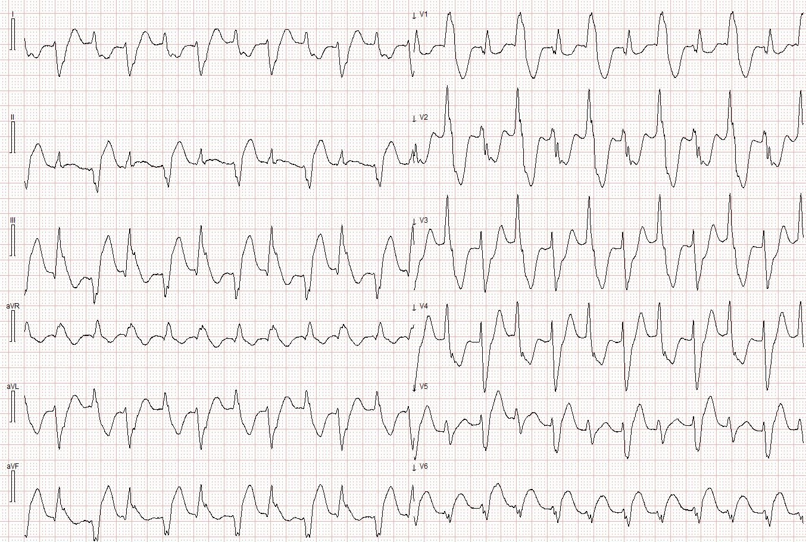
Bố trí chuyển đạo chuẩn, tốc độ 25 mm/s. Các chuyển đạo trước tim và chuyển đạo chi được ghi đồng thời, nên nhát đầu tiên ở các chuyển đạo chi trùng thời điểm với nhát đầu tiên ở các chuyển đạo trước tim
Điện tâm đồ này đã được đọc là LBBB kèm PVC nhịp đôi.
Bạn có đồng ý với cách đọc này không? Danh sách chẩn đoán phân biệt và các nguyên nhân có thể của bạn gồm những gì?= = =
Diễn giải: Điện tâm đồ trên cho thấy một nhịp nhanh QRS rộng (WCT) đều với hai hình dạng QRS khác biệt rõ. Đây không phải AFib kèm PVC nhịp đôi, vì nhịp đều. Hình dạng QRS trên điện tâm đồ này không phù hợp với LBBB (vốn được mô tả là “nền” của bệnh nhân này). Thay vào đó, có hình dạng RBBB, với hình dạng blốc phân nhánh trái trước (LAFB) và blốc phân nhánh trái sau (LAFB) luân phiên nhau. Điện tâm đồ này phù hợp với nhịp nhanh thất hai chiều (bidirectional ventricular tachycardia), tần số khoảng 125 lần/phút.
Trong các loại nhịp nhanh thất, nhịp nhanh thất hai chiều là biến thể hiếm gặp nhất, bỏ xa các loại khác. Rối loạn nhịp hiếm gặp này thường liên quan đến ngộ độc digoxin hoặc CPVT. Còn có các căn nguyên khác liên quan đến rối loạn nhịp này như viêm cơ tim, hạ kali máu và thậm chí cả ngộ độc aconite từ thảo dược.
- Bệnh nhân trong ca hôm nay không dùng digoxin.
- Bệnh nhân CPVT thường biểu hiện từ thời thơ ấu hoặc đầu tuổi thiếu niên.
- Rối loạn nhịp trên điện tâm đồ ban đầu của ca hôm nay kéo dài khoảng 10 phút, rồi tự kết thúc. Một điện tâm đồ ghi lại (bên dưới) được thực hiện sau khi nhịp của bệnh nhân thay đổi.
Điện tâm đồ # 2

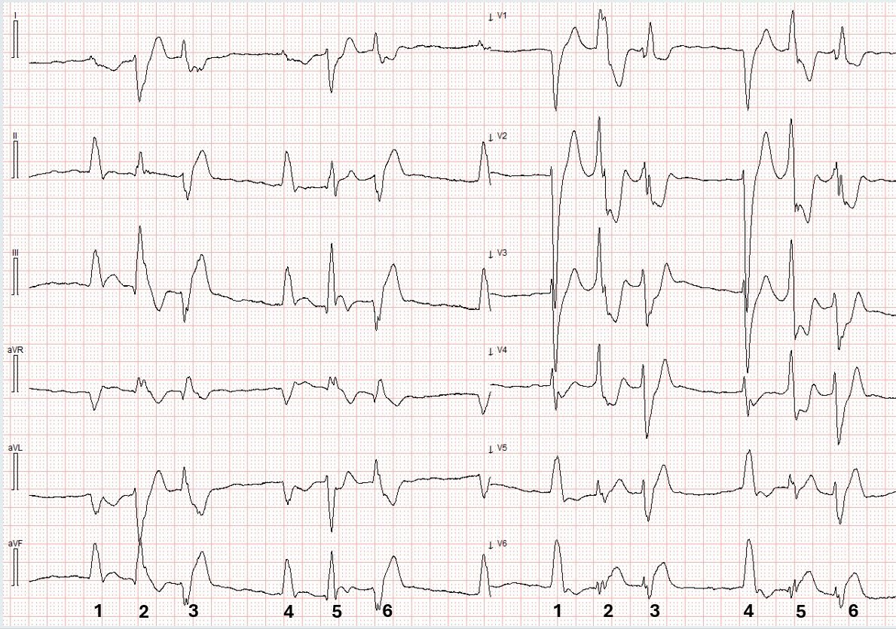
Tốc độ giấy 25mm/s. Các chuyển đạo trước tim và chuyển đạo chi được ghi đồng thời.
Bản ghi trên rất thú vị. Hãy xem kỹ — và cố gắng xác định nguyên nhân gây triệu chứng của bệnh nhân (cũng như nguyên nhân của rối loạn nhịp thất thấy trên điện tâm đồ #1).
Diễn giải: Điện tâm đồ #2 cho thấy AFib với nhiều phức bộ thất sớm (PVC). Các chuyển đạo chi và chuyển đạo trước tim được ghi đồng thời. Các nhát #1 và 4 là nhát trên thất với hình ảnh LBBB, và chúng có thay đổi thiếu máu cục bộ rõ ràng — cụ thể là ST chênh lên đồng hướng ở các chuyển đạo dưới và ST chênh xuống đồng hướng ở chuyển đạo aVL.
Các nhát #2 và 5 là PVC với hình dạng RBBB/LPFB — trong khi các nhát #3 và 6 là PVC với hình dạng RBBB/LAFB. Các PVC này thỏa tiêu chuẩn Sgarbossa cải biên theo Smith (Smith-modified Sgarbossa) cho OMI trong bối cảnh phức bộ QRS rộng. Hình dạng của các PVC giống hệt các hình dạng thấy trong cơn VT hai chiều.

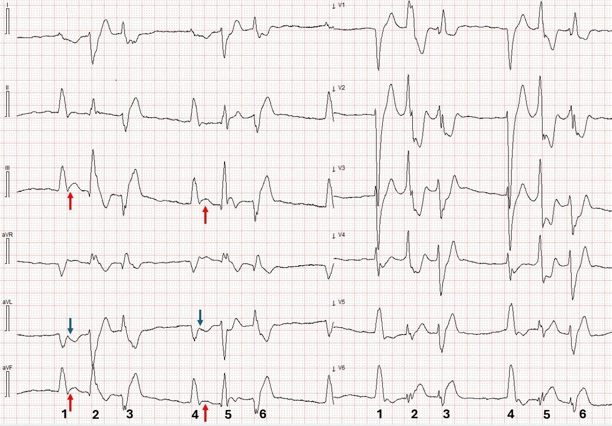
Cùng điện tâm đồ với điện tâm đồ #2. Nhịp là rung nhĩ, với các nhát #1 và 4 là nhát trên thất và được dẫn truyền lệch hướng kiểu LBBB. Các nhát #2 và 5 là PVC với hình dạng RBBB/LPFB — trong khi các nhát #3 và 6 là PVC với hình dạng RBBB/LAFB. Mũi tên đỏ chỉ vào ST chênh lên đồng hướng và mũi tên xanh chỉ vào ST chênh xuống đồng hướng ở các nhát dẫn truyền tự nhiên.
Tóm lại, bệnh nhân này (có tiền sử CABG, và đến với triệu chứng hội chứng vành cấp [ACS]) — có các dấu hiệu điện tâm đồ của nhồi máu cơ tim do tắc (OMI) vùng dưới-sau-bên đang diễn ra, kèm nhiều PVC đa ổ và nhịp nhanh thất hai chiều do thiếu máu cục bộ khởi phát!
Như đã được minh họa nhiều lần trên blog này, chỉ vì phức bộ QRS rộng không có nghĩa là không thể chẩn đoán thiếu máu cục bộ. Bác sĩ Smith và Meyers đã thẩm định tiêu chuẩn Sgarbossa cải biên để chẩn đoán thiếu máu cục bộ trong LBBB và nhịp tạo nhịp. Nhiều khả năng tiêu chuẩn cải biên cũng áp dụng được cho các hình dạng QRS rộng khác, đặc biệt nếu có tỷ lệ ST/R hoặc ST/S rất cao. Hình dưới đây tóm tắt tiêu chuẩn Sgarbossa gốc và tiêu chuẩn cải biên
Tóm tắt tiêu chuẩn Sgarbossa gốc và cải biên

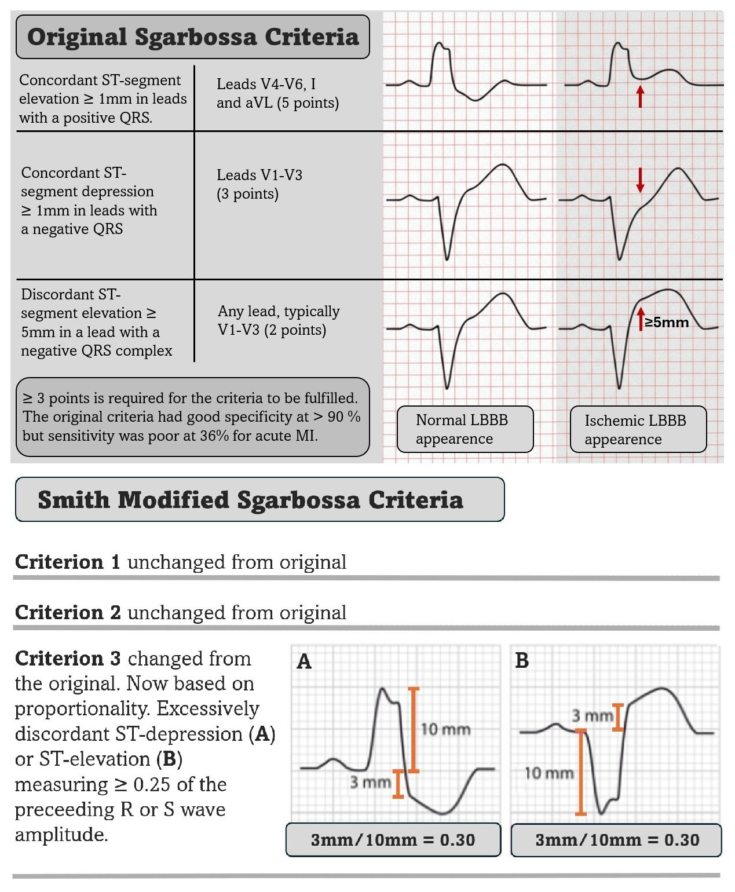
Xem lại điện tâm đồ lúc nhập viện — khi nhìn lại, điện tâm đồ # 1 cho thấy VT hai chiều gợi ý mạnh OMI nền là nguyên nhân gây rối loạn nhịp thất. Mặc dù tiêu chuẩn Sgarbossa cải biên theo Smith chưa được nghiên cứu hay thẩm định chính thức trong VT — tỷ lệ ST/R và ST/S RẤT cao phải khiến bác sĩ lâm sàng cảnh giác với khả năng lớn là cơn VT hai chiều này do OMI! Hình dưới đây cho thấy các chuyển đạo V2 và V6 thỏa tiêu chuẩn cải biên. Thực tế, tiêu chuẩn Sgarbossa cải biên dương tính ở hầu hết các chuyển đạo trên điện tâm đồ #1.

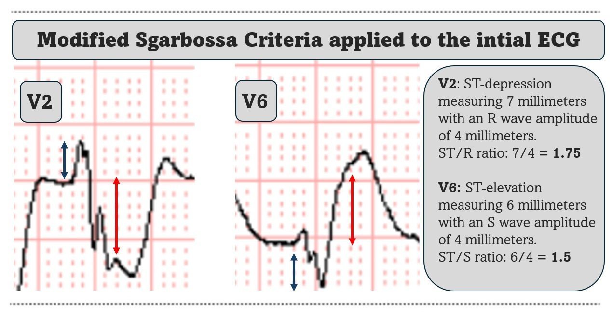
Phóng to các chuyển đạo V2 và V6 từ điện tâm đồ #1. Áp dụng tiêu chuẩn Sgarbossa cải biên theo Smith cho tỷ lệ ST/R ở chuyển đạo V2 là 1,75 và tỷ lệ ST/S ở chuyển đạo V6 là 1,5 — cao hơn đáng kể so với ngưỡng 0,25. Dù tiêu chuẩn cải biên chưa được thẩm định trong VT, một tỷ lệ cỡ này phải được coi là do OMI cho đến khi chứng minh được điều ngược lại.
Với một biểu hiện hiếm gặp như vậy của hội chứng vành cấp (ACS) — thật ấn tượng khi mô hình AI đọc điện tâm đồ PMCardio Queen of Hearts đã nhận diện chính xác OMI nền trên điện tâm đồ ban đầu, và gắn cờ đây là tương đương STEMI. Những dấu hiệu này đã bị người đọc điện tâm đồ ban đầu bỏ sót.

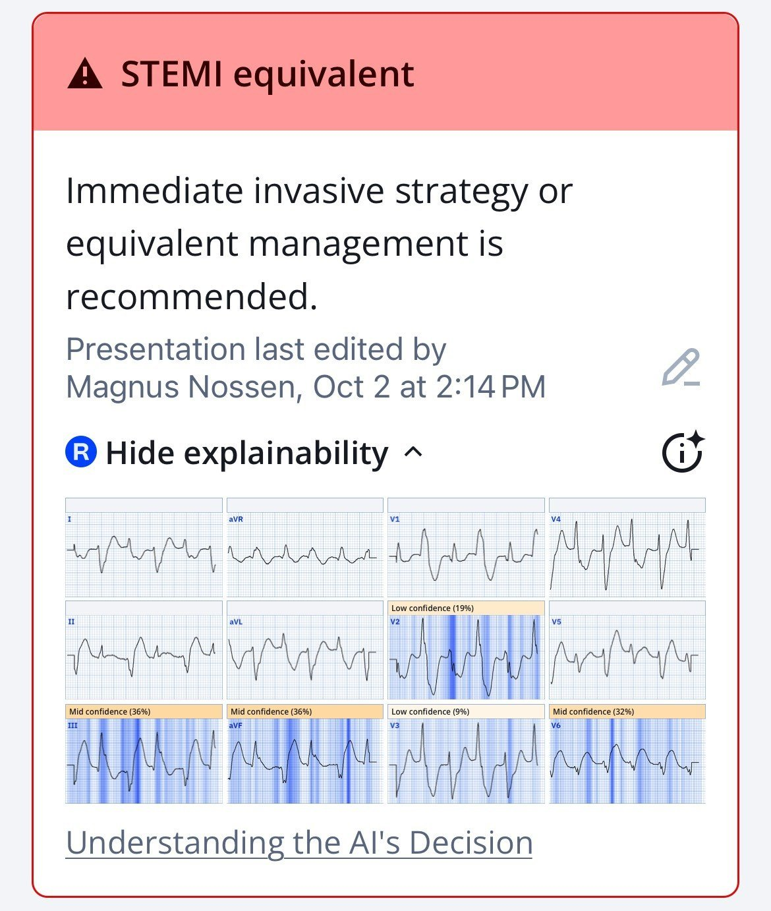
Kết quả đọc của Queen of Hearts kèm phần giải thích (explainability) cho điện tâm đồ ban đầu của ca hôm nay. Mô hình AI đọc nhịp là nhịp nhanh QRS rộng, về mặt kỹ thuật là đúng. Do BdVT rất hiếm, thuật toán không được huấn luyện để nhận diện riêng rối loạn nhịp này.
Ứng dụng mới PMcardio for Individuals App 3.0 nay đã có mô hình Queen of Hearts mới nhất và tính năng AI giải thích (bản đồ nhiệt màu xanh)! Tải ngay cho iOS hoặc Android. https://www.powerfulmedical.com/pmcardio-individuals/ (Bác sĩ Smith và Meyers đã huấn luyện mô hình AI và là cổ đông của Powerful Medical). Là thành viên cộng đồng của chúng tôi, bạn có thể dùng mã DRSMITH20 để được giảm 20% độc quyền cho năm đầu tiên của gói thuê bao năm. Tuyên bố miễn trừ: Một số mô-đun AI đọc điện tâm đồ là thiết bị y tế mang dấu CE theo EU MDR và chỉ được chứng nhận lưu hành tại Liên minh châu Âu và Vương quốc Anh. Công nghệ PMcardio chưa được Cục Quản lý Thực phẩm và Dược phẩm Hoa Kỳ (FDA) cho phép sử dụng lâm sàng tại Hoa Kỳ.
Ca bệnh tiếp diễn: Bệnh nhân được đội cấp cứu ngoài viện cho dùng ASA, NTG và morphin — và được chuyển đến khoa cấp cứu (ED) tại chỗ. Khi đến nơi, triệu chứng của bệnh nhân đã cải thiện phần nào. Điện tâm đồ dưới đây được ghi.
Điện tâm đồ này cho chúng ta biết điều gì — trong bối cảnh lâm sàng đau ngực đã cải thiện?
Điện tâm đồ # 3 – tại khoa cấp cứu tuyến cơ sở

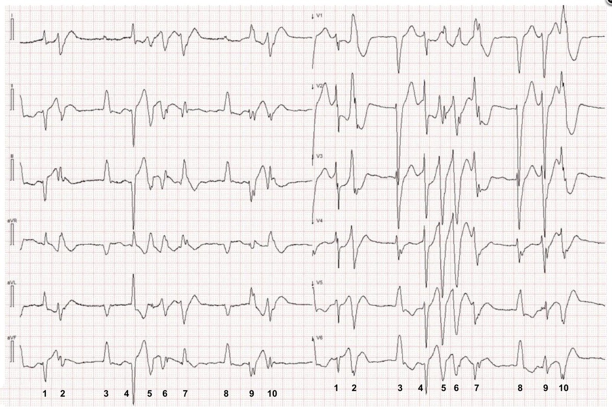
Tốc độ giấy 25mm/s. Các chuyển đạo chi và chuyển đạo trước tim được ghi đồng thời.
Điện tâm đồ này (điện tâm đồ #3) cho thấy AFib kèm LBBB — và từng loạt nhịp nhanh thất đa dạng (PMVT). Các phức bộ QRS trên thất (nhát #3 và #8) không còn thay đổi ST đồng hướng, điều này — cùng với việc triệu chứng cải thiện — gợi ý đã có tái tưới máu ở một mức độ nào đó. Tuy nhiên, sự xuất hiện của PMVT vẫn là một dấu hiệu rất đáng ngại trong bối cảnh ACS của bệnh nhân này.
- Troponin tăng ở mức 237 ng/L (tham chiếu <34 ng/L).
- Do có nhiều cơn PMVT không bền bỉ, đau ngực còn dai dẳng dù đã cải thiện, và kết quả troponin dương tính — bệnh nhân được chuyển đến cơ sở có can thiệp mạch vành qua da (PCI).
Khi đến trung tâm PCI, bệnh nhân đã hết đau, với điện tâm đồ dưới đây.
Điện tâm đồ # 4 trước PCI

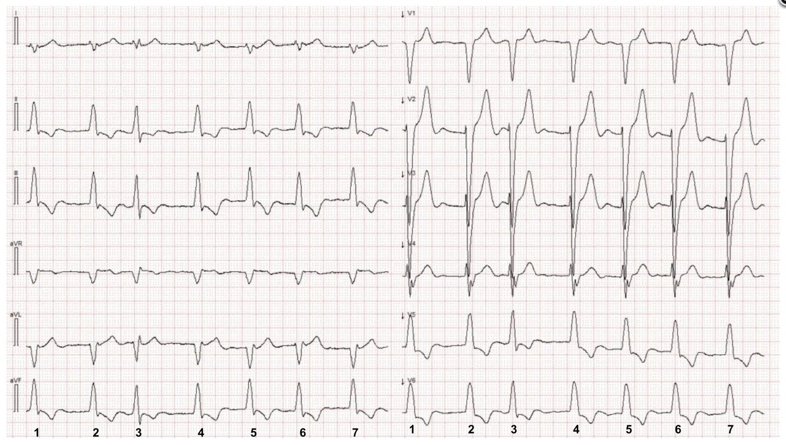
Rung nhĩ, sóng T đảo ngược (TWI) là dấu hiệu tái tưới máu. Nhát #3 có hình dạng QRS và thời gian QRS hơi khác, có thể do dẫn truyền siêu bình thường hoặc do hỗn hợp với một PVC xảy ra cùng lúc với QRS dẫn truyền tự nhiên.
Điện tâm đồ cho thấy AFib, một LBBB không điển hình (LBBB điển hình phải có sóng R một pha ở chuyển đạo I) và các dấu hiệu gợi ý tái tưới máu (sóng T đảo ngược lớn không tương xứng ở các chuyển đạo dưới, và cả ở các chuyển đạo V5,V6).
- Bệnh nhân được chụp động mạch vành, cho thấy tắc ba nhánh mạch vành tự nhiên: tắc 100% cả đoạn gần động mạch liên thất trước (pLAD) và đoạn gần động mạch vành phải (pRCA), cũng như đoạn xa động mạch mũ trái (dLCx). Cầu nối động mạch đến LAD và các cầu nối tĩnh mạch đến RCA và nhánh chéo thứ nhất đều thông.

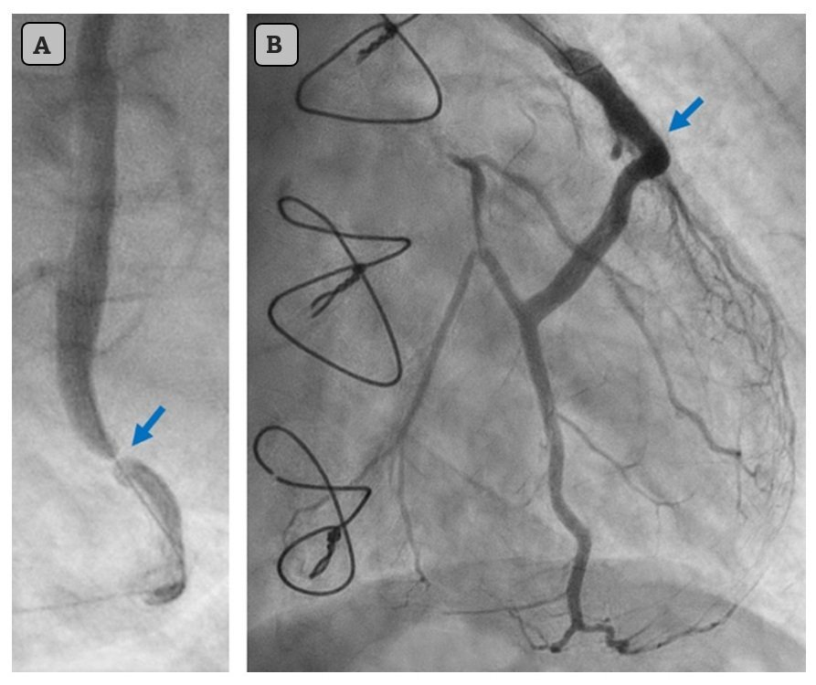
Mũi tên chỉ vào tổn thương thủ phạm trước can thiệp (A) và sau khi đặt stent (B).
= = =
Kết cục của ca hôm nay:
Tổn thương thủ phạm được xác định là chỗ tắc gần hoàn toàn 99% ở cầu nối tĩnh mạch đến một nhánh bờ thứ 2 lớn của LCx, được điều trị bằng đặt stent. Troponin I đạt đỉnh 40.758 ng/L, và siêu âm tim cho thấy rối loạn vận động thành sau-bên với phân suất tống máu 39%. Có nhiều PVC, nhưng không ghi nhận VT bền bỉ sau tái thông mạch. Điều trị suy tim hiện đại được khởi động, bao gồm metoprolol phóng thích chậm 75 mg hai lần mỗi ngày.
Do có nhiều PVC, Holter điện tâm đồ lưu động 24 giờ được thực hiện ngay sau khi xuất viện, cho thấy 6.955 PVC, 23 bộ ba và 3 cơn ngắn (3-5 nhát) nhịp nhanh thất không bền bỉ. Tần số tim trung bình là 42 lần/phút, kèm giảm đáng kể khả năng gắng sức. Vì vậy, liều thuốc chẹn beta được giảm — và lên lịch Holter theo dõi để đánh giá lại ngoại tâm thu thất và tần số tim. Sau khi điều chỉnh thuốc chẹn beta, bệnh nhân cho biết cảm thấy khỏe hơn và gắng sức tốt hơn.
- Sau đó, trong lần đeo HOLTER theo dõi, khi đang đeo thiết bị ở nhà — bệnh nhân đột ngột mất đáp ứng. Hồi sinh tim phổi nâng cao được tiến hành và duy trì trong 45 phút, gồm nhiều lần khử rung. Bất chấp mọi nỗ lực, hồi sức không thành công.
Trích đoạn từ HOLTER lưu động

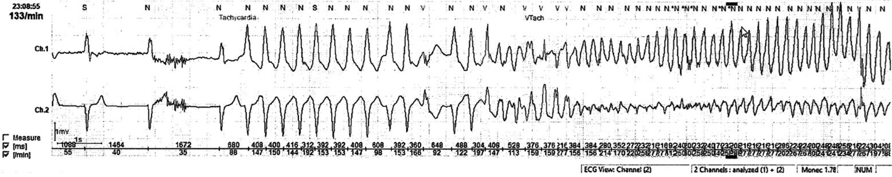
Một loạt ngắn VT đơn dạng chuyển thành rung thất (VF). Rối loạn nhịp được khởi phát bởi một PVC kiểu R trên T. Rất tiếc bệnh nhân không thể hồi sức thành công
= = =
Bàn luận:
VT hai chiều (BdVT) do thiếu máu cục bộ cấp là cực kỳ hiếm gặp và chỉ giới hạn ở các báo cáo ca. Dù vậy, như ca hôm nay cho thấy — điều này có thể xảy ra. Bác sĩ lâm sàng nên nhớ đến khả năng này nếu không thấy nguyên nhân rõ ràng nào khác của BdVT và bệnh cảnh lâm sàng ủng hộ ACS.
Cơ chế loạn nhịp chi tiết của BdVT nằm ngoài phạm vi của blog này. Tuy nhiên, giống như nhịp nhanh thất đa dạng do catecholamine và ngộ độc digoxin — thiếu máu cục bộ cơ tim có thể làm rối loạn chu trình calci trong tế bào cơ tim, gây ra hậu khử cực muộn và rối loạn nhịp thất. Vì BdVT thường kháng với sốc điện chuyển nhịp — xử trí nguyên nhân nền của BdVT là thiết yếu để có kết cục tối ưu.
Ở bệnh nhân hôm nay — BdVT tự hết nên chúng tôi không biết liệu rối loạn nhịp này có đáp ứng với sốc điện chuyển nhịp hay không. Mặc dù được xử trí phù hợp với guideline, bệnh nhân này vẫn bị ngừng tim ngoài bệnh viện và hồi sức không thành công. Điều này nhấn mạnh bản chất khó lường của các rối loạn nhịp thất ác tính — ngay cả khi điều trị phù hợp. Trước kết cục bi thảm này, có thể đặt câu hỏi liệu đã có chỉ định cấy máy khử rung tim cấy được (ICD) ở bệnh nhân ngoài 80 tuổi bị bệnh cơ tim thiếu máu cục bộ và rối loạn nhịp thất này hay chưa.
Sau tái thông mạch, ghi nhận nhiều PVC, nhưng không có rối loạn nhịp bền bỉ nào. Theo các guideline hiện hành, không khuyến cáo cấy ICD cho một bệnh nhân chỉ dựa trên PVC thường xuyên và các cơn VT không bền bỉ ngắn (3–5 nhát). Có lẽ có thể lập luận cho việc đặt máy tạo nhịp vĩnh viễn để tránh nhịp chậm và nhờ đó duy trì được liệu pháp chẹn beta liều cao. Những cân nhắc như vậy luôn rõ ràng khi nhìn lại, nhưng hiếm khi đơn giản trong thực hành lâm sàng.
Toàn văn báo cáo ca:
Case Report – European Heart Journal
= = =
Những điểm cần học
- BdVT điển hình nhất liên quan đến ngộ độc digoxin hoặc CPVT, nhưng, như ca này minh họa, có thể liên quan đến ACS.
- BdVT thường kháng với sốc điện chuyển nhịp, vì cơ chế là tăng tính tự động chứ không phải vào lại.
- BdVT thường đáp ứng kém với thuốc chống loạn nhịp. Do đó — tập trung nhận diện và điều chỉnh nguyên nhân nền là tối quan trọng.
- BdVT gặp trong CPVT nên được điều trị bằng thuốc chẹn beta và an thần.
- BdVT gặp trong ngộ độc digoxin nên được điều trị bằng kháng thể kháng digoxin, và duy trì kali máu ở mức bình thường cao.
= = =
======================================
BÌNH LUẬN CỦA TÔI, bởi KEN GRAUER, MD (18/2/2026):
Ca hôm nay của bác sĩ Nossen là một nghiên cứu hết sức thú vị về nhiều hình dạng QRS gây nhiễu ở bệnh nhân này, người được phát hiện có VT hai chiều (BiDirectional VT).
- ĐIỂM THEN CHỐT (PEARL) #1: Nhận biết rằng các chuyển đạo chi và chuyển đạo ngực đã được ghi đồng thời trong loạt điện tâm đồ mà bác sĩ Nossen trình bày ở trên — là MẤU CHỐT để hiểu hình dạng QRS nào thuộc về nhịp nào.
= = =
VT hai chiều (BiDirectional VT) là gì?
Để ôn lại — nên biết 4 kiểu hình dạng cơ bản của VT (nhịp nhanh thất): i) VT đơn dạng; — ii) VT đa dạng (PMVT) — bao gồm xoắn đỉnh (Torsades de Pointes); — iii) VT đa hình thái (pleomorphic); — và, iv) VT hai chiều (BDVT). Tôi ôn lại các thuật ngữ này trong bài ngày 1 tháng Sáu năm 2020 của Dr. Smith’s ECG Blog — và ở đây chỉ giới hạn bình luận về BDVT:
- VT hai chiều — Trong 4 dạng hình thái VT mà tôi đã liệt kê ở trên — BDVT hiếm gặp rõ rệt. Nhịp này đặc trưng bởi sự luân phiên trục QRS từng nhát một. Nó khác với PMVT và VT đa hình thái — vì có một kiểu nhất quán (thường là chu kỳ dài-ngắn luân phiên) được thấy suốt cơn VT. Như tên gọi đã ngụ ý, VT hai chiều có 2 hình dạng QRS — và chúng thường luân phiên cách một nhát.
= = =
ĐIỂM THEN CHỐT #2: Điều quan trọng là phải hiểu VT hai chiều có thể khó nhận ra đến mức nào! Đó là vì: i) Nhịp này không phổ biến (Theo kinh nghiệm của tôi — nó rất hiếm!); — ii) Tần số của BDVT thường nhanh (nên không dễ xác định liệu sóng P có thể ẩn trong sóng T, hay trong các phức bộ QRS rộng hay không!); — và, iii) Rất dễ nhầm BDVT với nhịp đôi thất hoặc blốc nhánh luân phiên (vì cả 2 tình trạng kia đều phổ biến hơn BDVT nhiều).
= = =
ĐIỂM THEN CHỐT #3: Khi cân nhắc chẩn đoán BDVT — Hãy nghĩ đến một trong các tình trạng sau, vốn được biết là thuận lợi cho rối loạn nhịp này:
- Ngộ độc digitalis
- Viêm cơ tim cấp
- Nhồi máu cơ tim cấp
- Liệt chu kỳ hạ kali máu
- CPVT (nhịp nhanh thất đa dạng do catecholamine ) — Mời xem bình luận của tôi trong bài ngày 3 tháng Bảy năm 2025 về một ca rất thú vị, trong đó BDVT được phát hiện ở bệnh nhân CPVT này!
- U di căn tim
- Một số thể hội chứng QT dài
- Ngộ độc aconite từ thảo dược
LƯU Ý: Mặc dù nhồi máu cơ tim cấp được liệt kê ở trên là một trong các tình trạng được biết là “thuận lợi” cho BDVT — theo kinh nghiệm của tôi, hoàn toàn không hay gặp BDVT là hậu quả duy nhất của thiếu máu cục bộ cấp — dù ca hôm nay cho chúng ta một ngoại lệ của quy luật chung này!
= = =
Điện tâm đồ ban đầu trong CA hôm nay:
Để cho rõ, trong Hình 1 — tôi đã đánh số các nhát trên điện tâm đồ ban đầu này bằng các màu xen kẽ nhau. Theo ĐIỂM THEN CHỐT #1 ở trên — bản ghi này chỉ có 10 nhát, và định dạng được dùng cho chúng ta lợi thế thấy được hình dạng QRS của từng nhát trong 10 nhát này ở từng chuyển đạo trong 12 chuyển đạo!
- Thoạt nhìn — tôi đã không biết nhịp trong Hình 1 là gì. Tần số chung của nhịp trên điện tâm đồ #1 rõ ràng là nhanh ( = khoảng 130/phút). Nhịp biểu hiện một kiểu lặp lại ( = hình dạng QRS luân phiên cách một nhát).
- Dù tôi đã tự hỏi liệu “cái bướu nhỏ” ở đoạn ST của mỗi nhát số chẵn ở chuyển đạo I có thể là một dạng hoạt động nhĩ nào đó — sóng P xoang rõ ràng là không có ( = Không thấy sóng P dương nào đi trước bất kỳ nhát nào ở chuyển đạo II).
- Thú nhận: Cho đến khi tôi đánh số các nhát và nhớ ra rằng các chuyển đạo chi và chuyển đạo ngực được ghi đồng thời — tôi đã bối rối không biết nhát nào ở các chuyển đạo chi tương ứng với hình dạng QRS nào ở các chuyển đạo ngực.
- ĐIỂM THEN CHỐT #4: Khi mọi cách khác đều thất bại — HÃY QUAY LẠI bệnh sử! Người đàn ông 83 tuổi trong ca hôm nay có tiền sử bệnh mạch vành lâu năm — với ghi nhận trong bệnh sử về một đợt mới CP (đau ngực [Chest Pain]) — bệnh nhân này có AFib từ lâu, và điện tâm đồ nền có LBBB (blốc nhánh trái).
= = =
ĐIỂM THEN CHỐT #5: Bệnh nhân hôm nay ổn định huyết động khi ghi điện tâm đồ ban đầu trong Hình 1. Nhờ vậy — các nhân viên y tế có một chút thời gian để xem nhịp kỹ hơn (tức là, Nếu bệnh nhân không ổn định huyết động — thì nhịp trong Hình 1 là gì cũng không còn quan trọng nữa, vì khi đó sẽ có chỉ định sốc điện chuyển nhịp ngay lập tức).
- Để dễ đánh giá 2 hình dạng QRS khác nhau trong Hình 1 — Trước tiên ta có thể xem các nhát số lẻ (màu ĐỎ) — rồi đến các nhát số chẵn (màu XANH).
- Tất cả các phức bộ QRS đều rộng.
- Các nhát màu ĐỎ phù hợp với hình dạng rbbb-lphb.
- Các nhát màu XANH phù hợp với hình dạng rbbb-lahb.
- Các phức bộ QRS gần như âm hoàn toàn của các nhát XANH ở các chuyển đạo dưới — và các phức bộ QRS gần như âm hoàn toàn ở chuyển đạo V6 của cả nhát XANH lẫn nhát ĐỎ — gợi ý rằng cả hai hình dạng QRS nhiều khả năng có nguồn gốc thất!
- Và rồi (theo ĐIỂM THEN CHỐT #4) — tôi quay lại bệnh sử và nhớ ra rằng bệnh nhân hôm nay bị AFib từ lâu với dẫn truyền kiểu LBBB. Cả tính đều đặn của kiểu QRS luân phiên lẫn việc không hình dạng nào trong 2 hình dạng QRS giống chút nào với dẫn truyền LBBB (vốn không bao giờ cho QRS dương ưu thế ở chuyển đạo V1) — gợi ý mạnh rằng nhịp nền không phải AFib — và — rằng cả hai hình dạng QRS đều có nguồn gốc thất! (Xem PHẦN BỔ SUNG bên dưới — để biết thêm về cách tiếp cận “thân thiện với người dùng” của tôi với LBBB,RBBB,IVCD).
- ĐIỀU CỐT LÕI: Chuỗi suy luận tuần tự ở trên đã dẫn tôi đến chẩn đoán VT hai chiều (dù dường như không có tình trạng thuận lợi nào cho BDVT đã liệt kê trong ĐIỂM THEN CHỐT #3).
= = =
Hình 1: Tôi đã đánh dấu điện tâm đồ ban đầu của EMS.

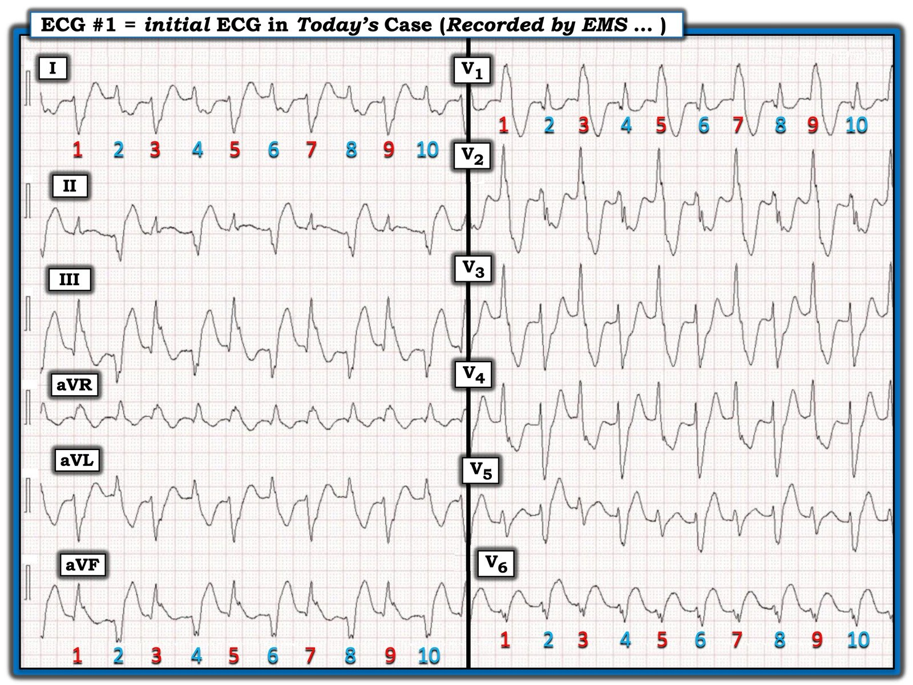
= = =
Điện tâm đồ ghi lại của EMS:
Theo bác sĩ Nossen, trong vòng 10 phút tiếp theo — nhịp trong Hình 1 đã tự chuyển thành nhịp trên điện tâm đồ #2.
- Để cho rõ, trong Hình 2 — tôi lại dùng các số có màu cho 7 nhát có trên bản ghi để dễ đánh giá hình dạng QRS.
- Theo bác sĩ Nossen — nhịp nền giờ là AFib. Ta thấy một kiểu lặp lại của các nhóm 3 nhát với các hình dạng QRS khác nhau.
- Các nhát màu ĐEN #1,4,7 — phù hợp với dẫn truyền kiểu LBBB, mà ta được biết là rối loạn dẫn truyền đã có từ lâu ở bệnh nhân này ( = âm ưu thế ở các nhát #1,4,7 tại các chuyển đạo ngực phía trước — và QRS dương hoàn toàn ở các chuyển đạo ngực bên V5,V6). Lưu ý rằng dù QRS rất nhỏ ở các nhát #1,4,7 tại chuyển đạo I — QRS vẫn dương hoàn toàn ở chuyển đạo phía trái này.
- Các nhát màu ĐỎ #2,5 — phù hợp với hình dạng rbbb-lphb (với hình dạng QRS về cơ bản giống các nhát ĐỎ trong Hình 1).
- Các nhát màu XANH #3,6 — phù hợp với hình dạng rbbb-lahb (với hình dạng QRS về cơ bản giống các nhát XANH trong Hình 1).
- Và theo ĐIỂM THEN CHỐT #4 — Khi mọi cách khác đều thất bại, HÃY QUAY LẠI bệnh sử, trong đó người đàn ông 83 tuổi này kể về một đợt CP mới là một trong những lý do chính khiến ông gọi EMS.
- ĐIỂM THEN CHỐT #6: Tôi đã đánh dấu bằng các mũi tên có màu trong Hình 2 — rằng các chuyển đạo III,aVL và aVF cho thấy, bên cạnh dẫn truyền kiểu LBBB — thay đổi ST-T nguyên phát của nhồi máu cấp ( = ST chênh lên lẽ ra không có ở các chuyển đạo III,aVF — và ST chênh xuống soi gương ở chuyển đạo aVL). Không có gì ngạc nhiên — thông tim cho thấy bệnh nhiều nhánh mạch vành nặng.
= = =
SUY NGHĨ CUỐI CÙNG: Một trong những “Điều cần nhớ” từ ca hôm nay — là VT hai chiều đôi khi có thể gặp trong thiếu máu cục bộ (điều mà bệnh nhân cao tuổi hôm nay rõ ràng có, xét bệnh sử đau ngực mới, troponin tăng, và kết quả thông tim có bệnh nhiều nhánh mạch vành nặng).
= = =
Hình 2: Tôi đã đánh dấu điện tâm đồ ghi lại của EMS, ghi sau khi nhịp ban đầu tự hết (tức là, trong vòng ~10 phút sau điện tâm đồ #1).

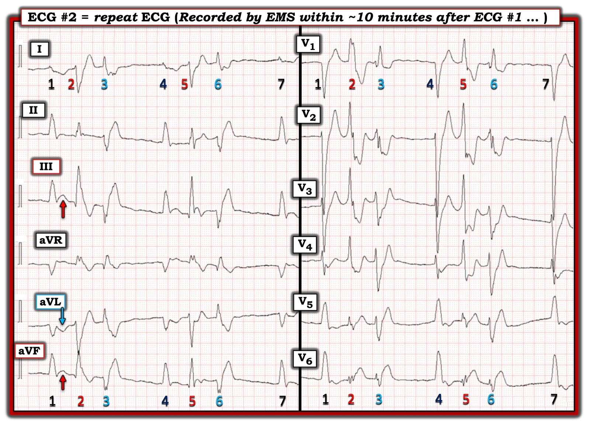
= = =
PHẦN BỔ SUNG:
Trong video 13 phút dưới đây — tôi đơn giản hóa việc chẩn đoán nhanh loại blốc nhánh bằng cách tập trung vào 3 chuyển đạo MẤU CHỐT ( = các chuyển đạo I,V1,V6 ) — giúp bạn phân biệt LBBB với RBBB với IVCD — trong chưa đầy 5 giây!
- LƯU Ý: Bạn có thể dễ dàng tìm video này bất cứ lúc nào (cùng các ECG Video khác của bác sĩ Sam Ghali và tôi) trong thẻ “ECG Videos” ở Menu phía trên cùng của mọi trang trong Dr. Smith’s ECG Blog!

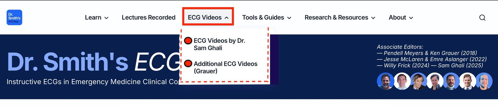
= = =
VIDEO ĐIỆN TÂM ĐỒ (ECG VIDEO): Cách tiếp cận “thân thiện với người dùng” để chẩn đoán BBB trên điện tâm đồ.
= = =
===